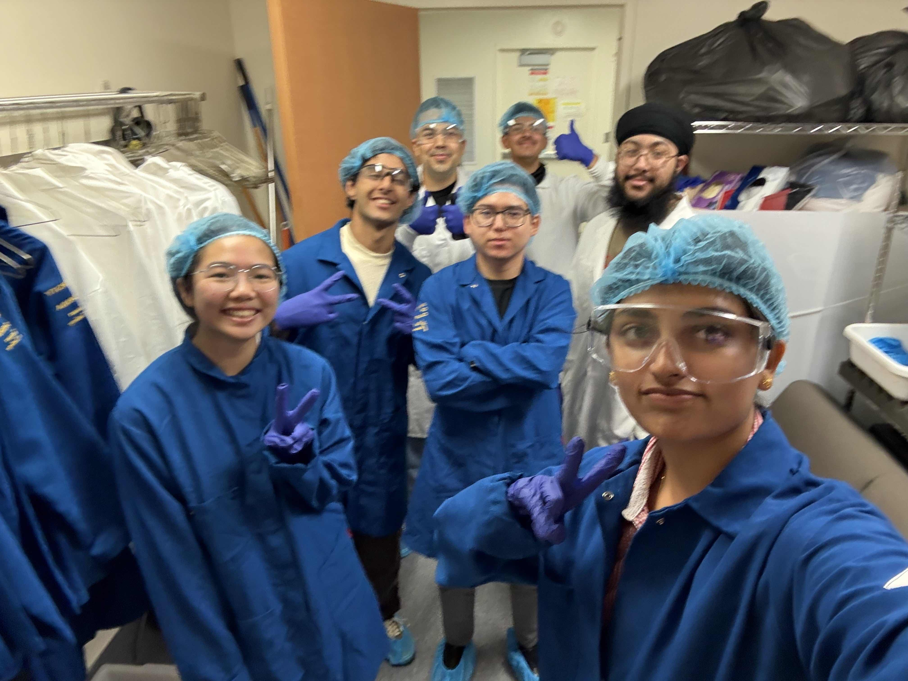
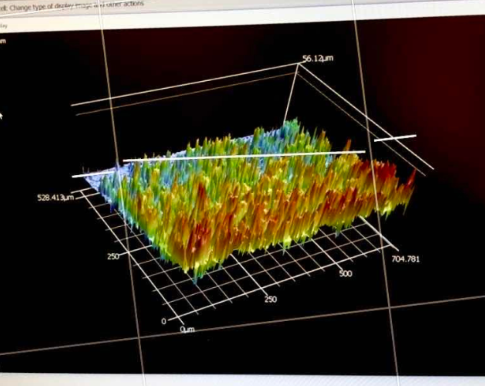
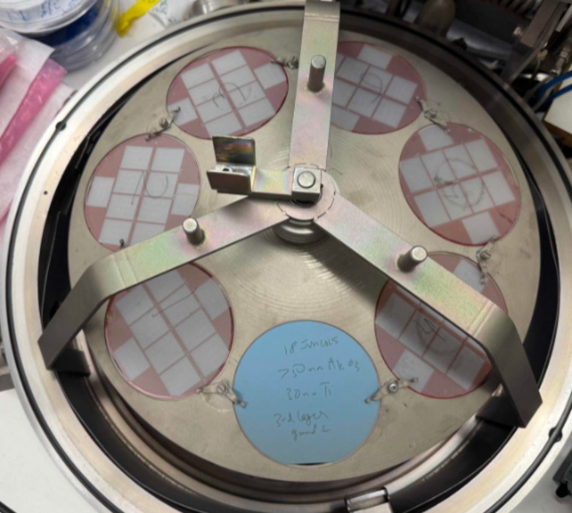
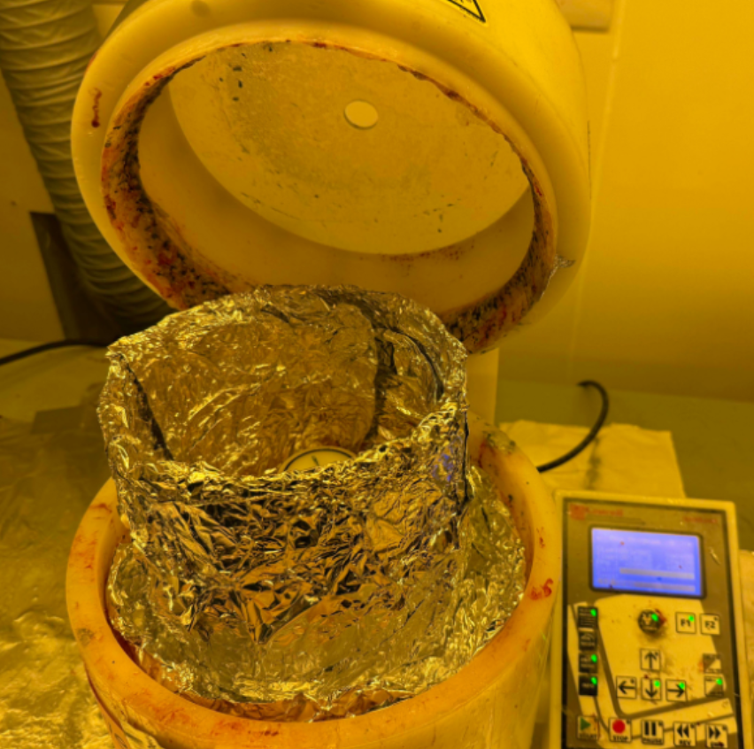
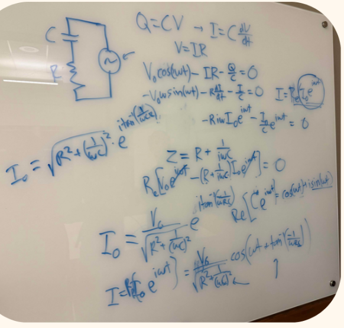
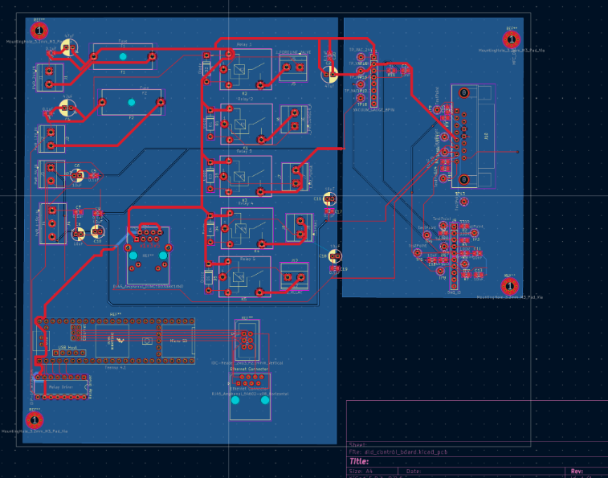
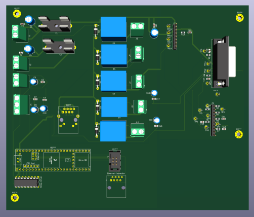
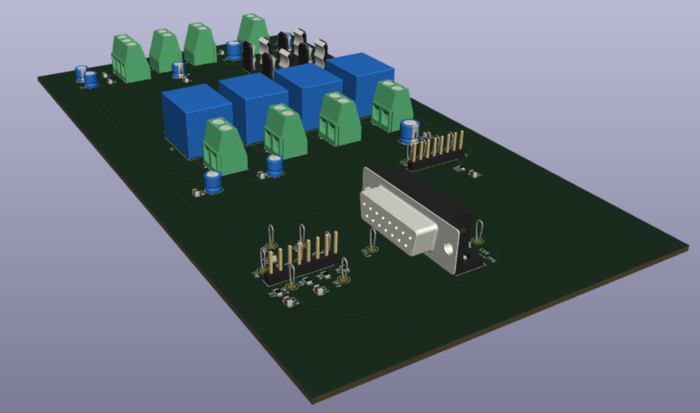
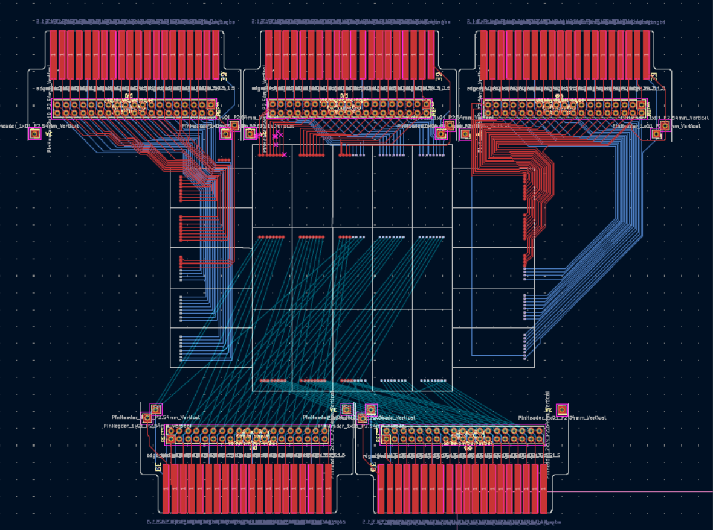

I joined the QB3 Nanotechnology Lab in August 2025 and have been working under Dr. Khalid to develop an electron-beam lithography system and grow carbon nanotubes on chip for a biosensing device. Most of my work has focused on learning the lab's procedures and operating its equipment, including writing official lab documentation for the electron-beam evaporation system. I have also designed and built PCBs for multiple subsystems and oversaw the full process from chip design through in-lab fabrication.
Low Cost Lithography, Controlled CNT Growth.

The lab is researching low-cost, scalable lithography methods to reduce bottlenecks in chip production and make the process more accessible. In parallel, we are developing chips that enable controlled carbon-nanotube growth to enhance energy-storage efficiency and power output.
The profilometer scan to the left shows one of our early CNT forests — roughly 56 µm tall across a 700 × 500 µm window — used to characterize growth uniformity across the chip.


Equipment, Procedures, and First Principles.

Most of my first months were spent learning how the lab runs — spin coating, electron-beam evaporation, ALD, profilometry — and working out the physics behind each step from scratch with Dr. Khalid at the whiteboard.
I also wrote the official lab documentation for the electron-beam evaporation system: recipe templates, chamber-load and pump-down procedures, and the safety/interlock notes used by new students before they go on the tool.
ALD Control Board

I worked to convert a 70-page internal write-up of the ALD Control Board into an actual PCB that is ready to be manufactured. The board switches the precursor and purge valves for an atomic-layer-deposition recipe and reports state back over Ethernet.
Revisions were made to integrate the board with a Teensy 4.1 microcontroller, including the relay-driver fan-out, the DB-15 valve connector, and the SD/Ethernet headers used for recipe storage and remote control. The firmware was finalized in parallel so the hardware and software hand-off at the same revision.


Routing the Brain on a Chip PCB.

In March I helped Dr. Khalid with the layout for the Brain-on-a-Chip PCB — a carrier board that breaks out a central electrode array to four banks of dense pin headers around the perimeter.
The hard part was the fan-out: every pad in the central die area needs an isolated trace to one specific header pin, with matched lengths where possible and no crossings on a given layer. I worked on routing the top (red) and bottom (blue) signal layers so the geometry stays clean as the board scales up in channel count.